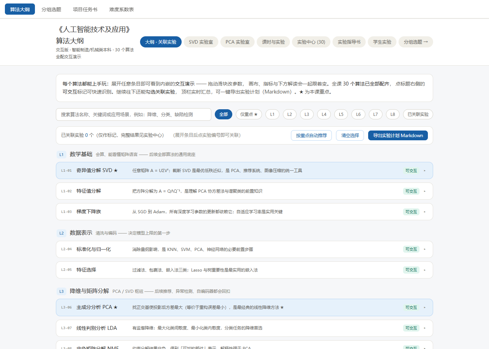
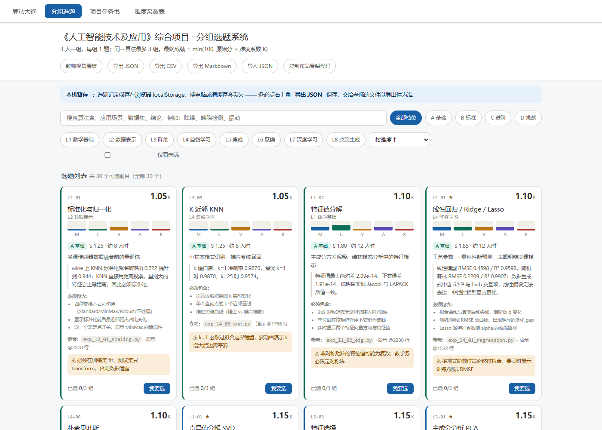

一、独立网页（可单独打开）
交互大纲 · 30 个演示
outline-interactive.html — 8 层 30 算法，每个条目内嵌画布 + 滑块 + KPI + 动态解读。
分组选题系统
topic-picker.html — 难度系数卡片、登记表单、教师看板、撞题检测、localStorage 持久化。
项目任务书
project-brief.html — 分工、交付清单、5 周里程碑、AI 使用声明、rubric。
学生实验指导书
lab-guide.html — 30 个实验的操作说明与报告模板。
实验结果报告
experiment-report.html — 30 个实验的数值、表格与 SVG 图汇总。
二、课程文档（Markdown）
| 文件 | 内容 |
|---|---|
| docs/course-outline.md | 算法大纲、课时分配、实验清单、考核方式 |
| docs/lab-guide.md | 实验指导书源文件 |
| docs/project-brief.md | 项目任务书源文件 |
| docs/difficulty-table.md | 30 算法五维难度评分、系数换算表、逐题建议 |
| experiments/results/REPORT.md | 实验报告 Markdown 源文件 |
三、配套程序
30 个 Python 实验
experiments/exp_l*_*.py — 统一 SEED=42、main(seed) 四段模板；python experiments/run_all.py 一键复现。
公共模块
experiments/common/（离线数据集、IO、runner）与 experiments/fromscratch/（7 个 numpy 手写实现）。
实验产物
experiments/results/metrics/ 30 个 JSON、figures/ 33 张 SVG、tables/ 明细表。
构建与验收工具
tools/ — 合并构建、难度系数数据源、演示注入、语法检查与 Playwright 验收脚本。
Python 依赖：numpy / scikit-learn / matplotlib（实验脚本），网页本身无需任何安装。
四、页面预览


五、边界与说明
演示简化声明：网页内的 30 个交互演示是浏览器内 JavaScript 实时计算的教学用简化模型，用于说明算法机理与参数影响，不是 sklearn / 工业库实现，不作精度、检测率或性能评测依据。数值真值以
文件名对照：为适配 GitHub Pages，中文文件名已改为 ASCII kebab-case，文档正文中的引用已同步改写。构建脚本（
排除项：
experiments/ 下 seed=42 的 Python 脚本结果为准，二者可互为对照。文件名对照：为适配 GitHub Pages，中文文件名已改为 ASCII kebab-case，文档正文中的引用已同步改写。构建脚本（
tools/build_merged.py 等）内保留原始项目路径，需在原课程工作区运行；本仓库为其归档快照。排除项：
__pycache__/、*.pyc、运行日志 *.log 未纳入归档。